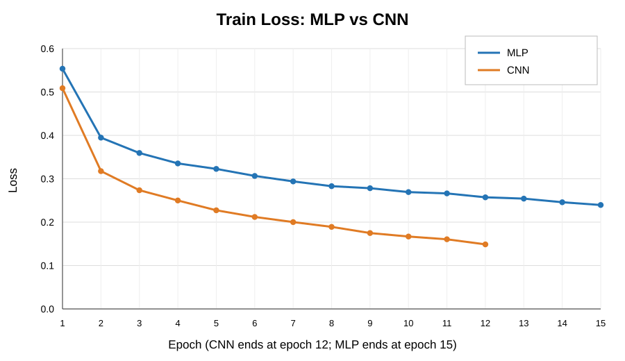
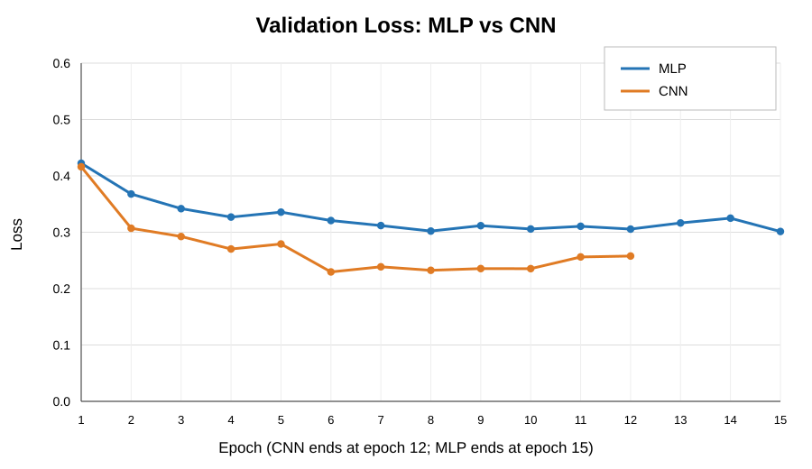
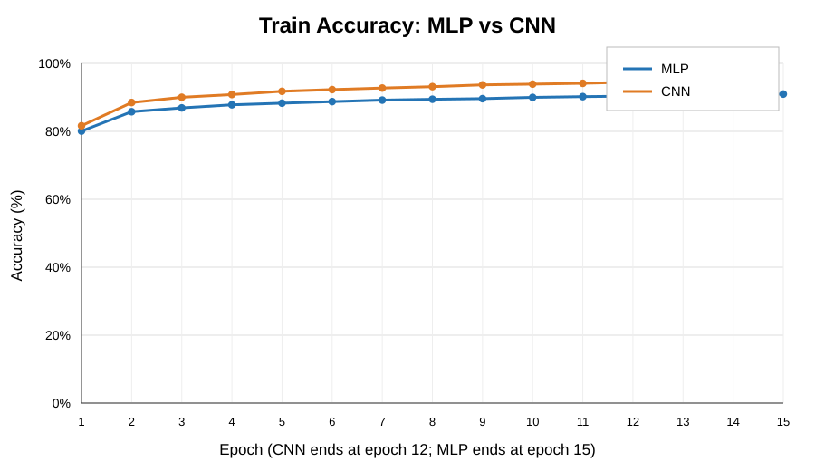
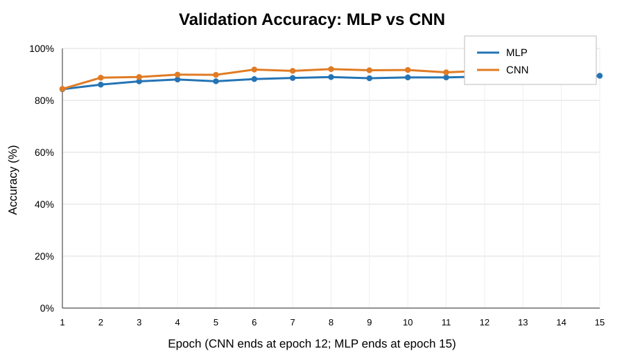
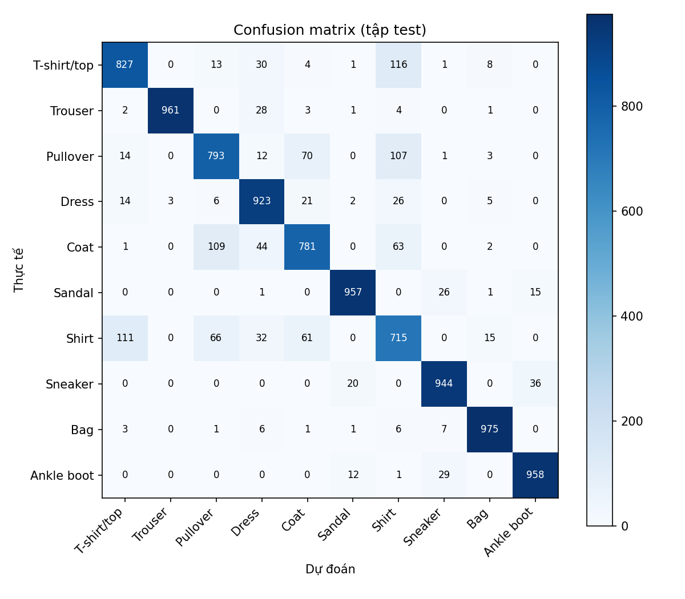

Tóm tắt kết quả
Thực nghiệm xây dựng pipeline phân loại FashionMNIST gồm khảo sát dữ liệu, tiền xử lý, chia tập, huấn luyện, validation, lưu checkpoint và đánh giá trên test set. CNN đạt chất lượng phân loại cao hơn MLP trong cấu hình đã thử; MLP có chi phí thời gian thấp hơn trong lần đo hiện tại.
1. Dataset và EDA
FashionMNIST gồm 70.000 ảnh grayscale 28×28, thuộc 10 lớp. Dữ liệu train gốc có 60.000 ảnh (6.000 ảnh mỗi lớp); test có 10.000 ảnh (1.000 ảnh mỗi lớp).
| Split | Số ảnh | Mục đích |
|---|---|---|
| Train | 50.000 | Cập nhật trọng số |
| Validation | 10.000 | Chọn checkpoint |
| Test | 10.000 | Đánh giá cuối cùng |
EDA và cleaning
- Ảnh 28×28, grayscale, dtype uint8, pixel [0,255].
- Ảnh trống trong train: 0.
- Ảnh trùng lặp chính xác trong train: 0.
- Ảnh train trùng chính xác với test: 0.
- Mean pixel trên train thô: khoảng 0,2860; std khoảng 0,3530; pixel bằng 0 chiếm 50,21%.
- PCA trên mẫu 6.000 ảnh: 50 components giữ khoảng 86,3% phương sai.
Độ tương đồng ảnh trung bình giữa các lớp
| Cặp lớp | Khoảng cách Euclid |
|---|---|
| Pullover – Coat | 2,48 |
| Pullover – Shirt | 2,68 |
| Coat – Shirt | 3,02 |
| T-shirt/top – Shirt | 3,72 |
| Sandal – Sneaker | 3,84 |
Khoảng cách ảnh trung bình là chỉ báo khám phá dữ liệu, không phải phép đo trực tiếp xác suất nhầm lẫn.
Tiền xử lý
Train/validation được chia với seed 42. Mean = 0,2858626 và std = 0,3529320 được tính chỉ từ training split. Ảnh chuẩn hóa theo x_norm = (x − mean_train) / std_train. CNN nhận tensor (B,1,28,28); MLP nhận vector 784 chiều sau Flatten.
2. Thiết kế mô hình
MLP
Flatten → Linear(784,256) → ReLU → Dropout(0,2) → Linear(256,128) → ReLU → Dropout(0,2) → Linear(128,10).
235.146 tham số.
Baseline fully connected; không giữ cấu trúc không gian sau Flatten.
CNN
Conv 1→32→64→128, BatchNorm, ReLU, MaxPooling, Adaptive Average Pooling 3×3, classifier 1152→128→10.
241.994 tham số.
Khai thác đặc trưng cục bộ và quan hệ không gian của ảnh.
Thiết lập huấn luyện
| Tham số | Giá trị |
|---|---|
| Seed | 42 |
| Batch size | 128 |
| Epoch tối đa | 15 |
| Optimizer / Learning rate | Adam / 0,001 |
| Loss | CrossEntropyLoss |
| Weight decay | 0,0001 |
| Early stopping patience | 4 |
Training loop thực hiện zero_grad → forward → loss → backward → optimizer.step. Checkpoint được chọn theo validation accuracy tốt nhất.
3. Kết quả thực nghiệm
| Chỉ số | MLP | CNN |
|---|---|---|
| Best validation accuracy | 89,48% | 92,05% |
| Test accuracy | 88,65% | 91,30% |
| Macro-F1 | 88,62% | 91,32% |
| Test loss | 0,3227 | 0,2473 |
| Training time | 21,88 s | 201,26 s |
| Inference latency | 0,0673 ms/ảnh | 0,2684 ms/ảnh |
| Parameters | 235.146 | 241.994 |
| Epoch thực chạy | 15 | 12 |
CNN cao hơn MLP 2,65 điểm phần trăm về accuracy và 2,71 điểm phần trăm về Macro-F1. MLP train nhanh hơn và latency thấp hơn trong lần đo này. Kết quả thời gian phụ thuộc phần cứng và điều kiện đo.
4. Đường cong huấn luyện
Các biểu đồ được tạo từ history.json. MLP có 15 epoch, CNN có 12 epoch; không nội suy thêm điểm.
Train Loss

Validation Loss

Train Accuracy

Validation Accuracy

CNN đạt validation accuracy tốt nhất 92,05% tại epoch 8. Validation loss thấp nhất khoảng 0,2296 tại epoch 6. MLP đạt validation accuracy tốt nhất 89,48% tại epoch 15.
5. Phân tích theo lớp
| Lớp | MLP F1 | CNN F1 |
|---|---|---|
| T-shirt/top | 0,8433 | 0,8738 |
| Trouser | 0,9798 | 0,9856 |
| Pullover | 0,8042 | 0,8734 |
| Dress | 0,8894 | 0,9097 |
| Coat | 0,8127 | 0,8610 |
| Sandal | 0,9597 | 0,9767 |
| Shirt | 0,6991 | 0,7506 |
| Sneaker | 0,9439 | 0,9621 |
| Bag | 0,9758 | 0,9711 |
| Ankle boot | 0,9539 | 0,9685 |
CNN có F1 cao hơn ở 9/10 lớp. Bag là ngoại lệ; Shirt là lớp khó nhất ở cả hai mô hình.
6. Confusion Matrix và phân tích lỗi
Hàng là nhãn thực tế, cột là nhãn dự đoán. Đường chéo biểu diễn số dự đoán đúng.
MLP — 8.865/10.000 dự đoán đúng

Các nhầm lẫn lớn nhất: Shirt → T-shirt/top (156); Pullover → Shirt (87); Pullover → Coat (84); Coat → Pullover (83); Coat → Shirt (77).
CNN — 9.130/10.000 dự đoán đúng

Các nhầm lẫn lớn nhất: Coat → Shirt (95); T-shirt/top → Shirt (75); Pullover → Shirt (66); Coat → Pullover (63); Dress → Shirt (51).
7. Data Audit
12/12 checks PASS
- Số lượng train/test đúng.
- Shape 28×28, grayscale, uint8, pixel [0,255].
- Nhãn hợp lệ 0–9, đủ 10 lớp.
- Train/validation không giao nhau; kích thước split đúng và bao phủ tập train gốc.
- Đủ lớp trong từng split.
- Mean/std hữu hạn, std dương; thống kê chỉ tính từ train split.
Notebook EDA kiểm tra bổ sung ảnh trống, trùng lặp train và trùng lặp chính xác train/test; kết quả lần lượt đều bằng 0. Ba kiểm tra cleaning này không thuộc 12 checks trong script audit.
8. Kết luận và hạn chế
Trong cấu hình hiện tại, CNN cho chất lượng phân loại tốt hơn MLP trên FashionMNIST. CNN đạt 91,30% test accuracy và 91,32% Macro-F1, còn MLP đạt 88,65% và 88,62%. MLP có lợi thế về thời gian huấn luyện và độ trễ suy luận. Confusion Matrix cho thấy các lỗi còn tập trung ở nhóm áo có hình dáng gần nhau, đặc biệt là Shirt.
Thực nghiệm sử dụng một seed và một cấu hình chính cho mỗi kiến trúc; chưa báo cáo trung bình nhiều lần chạy. Thời gian train và latency phụ thuộc thiết bị. PCA được thực hiện trên mẫu 6.000 ảnh.